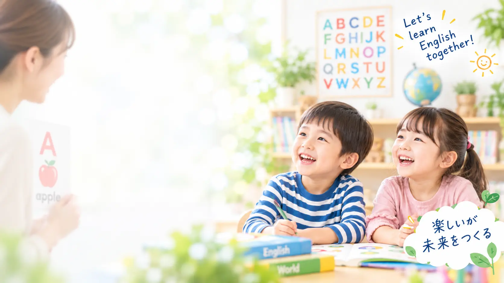
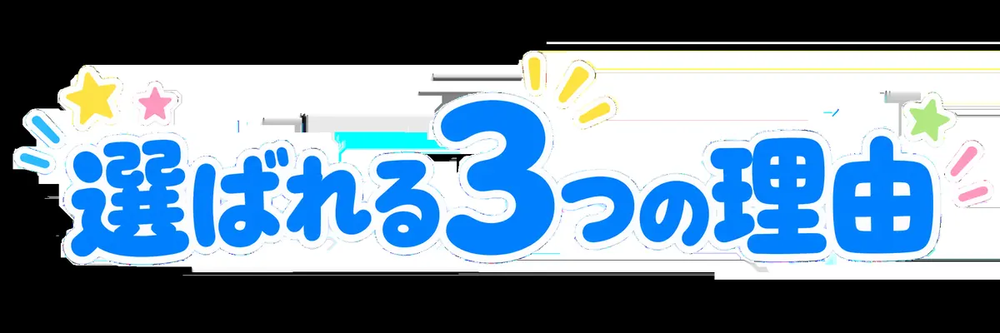
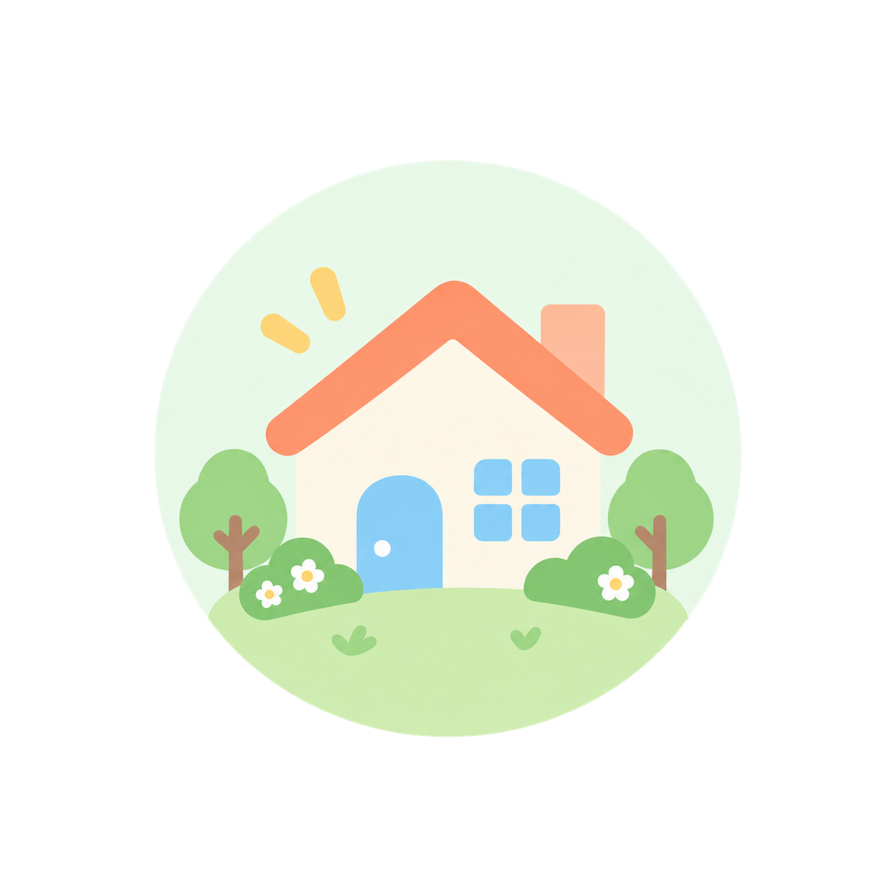
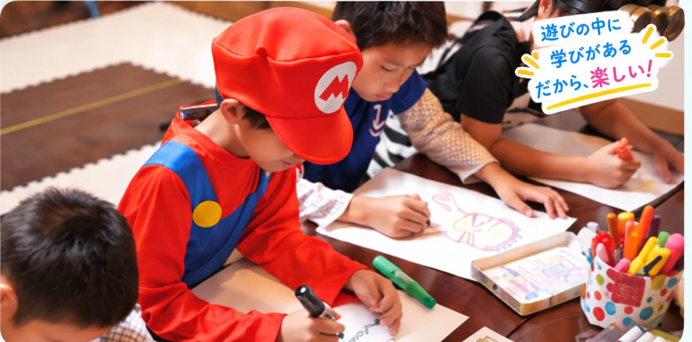

親が英語を教えられなくても、大丈夫
英語を教えるのは教室にお任せください。ご家庭では学びを一緒に見守っていただけたら十分です。


英語を教えるのは教室にお任せください。ご家庭では学びを一緒に見守っていただけたら十分です。
発達・性格・理解度・やる気まで見ながら、一人ひとりに合った関わりで「できた」につなげます。

通いやすい料金と、家族の生活にも配慮した教室づくりを大切にしています。
教育・保育・子どもの発達や学びを見てきた代表と、英語を専門的に学んだ講師を含むチームで、一人ひとりの学びを支えています。
レッスン後は毎回、代表と講師で子どもの様子を共有。学びの進み方やつまずきに合わせて、関わり方を調整しています。
年齢だけでなく、英語経験や理解度に合わせてクラスをご案内しています。
英語の音やリズムに親しむ
遊び・会話・フォニックス
英会話・フォニックス・テキストで中学英語の土台へ
4技能・定期テスト・高校入試も見据える
クラスについて｜年齢だけでなく、英語経験や理解度に合わせてご案内しています。
子どもの「できた！」を一緒に育てます。
実は私自身、英語はまったくできません。だからこそ「子どもには英語で困ってほしくない」という保護者の気持ちがよく分かります。
英語を専門的に学び、子ども英語教育の経験を持つ講師も在籍。それぞれの担当クラスで、一人ひとりの理解度や様子を見ながらレッスンを進めています。
もちろん大丈夫です。英語を教えるのは教室にお任せください。ご家庭では、宿題への声かけや「やってみよう」と背中を押していただくなど、学びを一緒に見守っていただけたら十分です。
はい。初めてのお子さんも、英語経験や理解度を見ながらクラスをご案内します。
年齢だけで固定せず、英語経験・理解度・現在のレベルを見ながら調整します。
ごきょうだいで通う場合も、できる限り送迎の負担が少なくなるよう時間帯を調整しています。
はい。何度か実際のレッスンに参加してから考えていただける「1か月体験」をご用意しています。
ハロウィン、クリスマス、クッキング、ゲームなど、楽しいイベントを通して、英語を「楽しい」だけで終わらせず、自然に使う経験を増やしていきます。

「うちの子に合うかな？」「ちゃんと続けられるかな？」そんな不安があって当たり前。だから、何度か実際のレッスンに参加してから考えていただける1か月体験をご用意しています。
体験期間中の月謝は無料です。
1か月体験について相談する